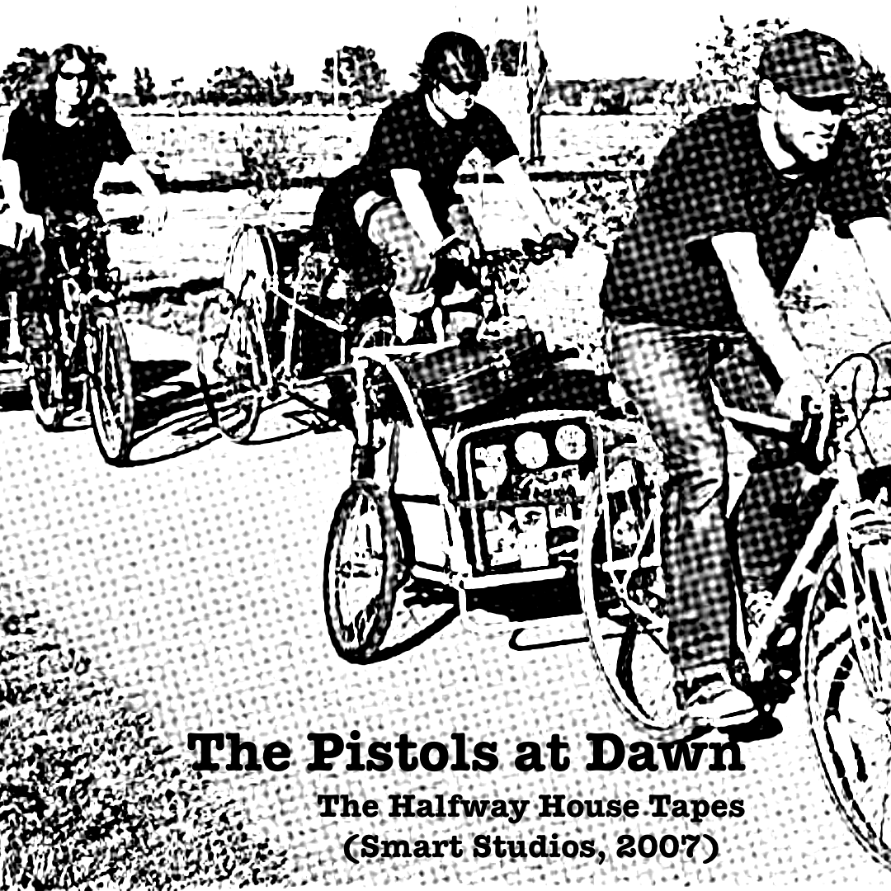

Listen
The Halfway House Tapes
The Halfway House Tapes (Smart Studios, 2007) is out now on streaming services. Recorded live at Smart Studios with producer Beau Sorenson, these long-unreleased sessions capture The Pistols at Dawn during the band’s early peak and mark the group’s 20th anniversary.

About the Release
The session was tracked live to 2-inch tape using classic recording methods and plate reverb. Though recorded in 2007, these tracks were only released on CD-R or 7" before finally making its way to streaming in 2026.
Earlier Releases
The band’s recorded output also includes the The Pistols at Dawn / Sky Road Fly split 7", featuring the songs Road Rash, and Trigger and Sylvia.